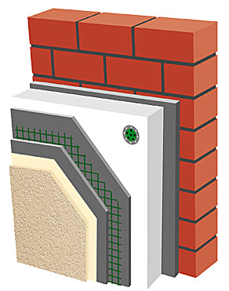

Wykonujemy tynki, elewacje, pe³ne systemy dociepleñ oparte na styropianie lub we³nie. Tynki mineralne, akrylowe, sylikatowe, sylikonowe. Posiadamy wyszkolone i profesjonale ekipy gwarantuj±ce wysok± jako¶æ wykonanych prac .

Kompletny system na 1m2 zawiera: 1m2 Styropianu 4kg Zaprawy do przyklejania styropianu 4szt £±cznika plastikowego 1,1m2 Siatki 145g/m2 3,5kg Zaprawy do zbrojenia siatki 0,2 litra gruntu w kolorze 2,4kg Tynku 1,5mm w kolorze
Ogólna charakterystyka systemu dociepleñ Docieplenia oferowane przez nasz± firmê to ¶wietny sposób na ocieplenie budynków nowo powsta³ych oraz starych. Na warstwowy uk³ad sk³adaj± siê na stepuj±ce materia³y do ociepleñ: wysezonowane p³yty styropianowe lub p³yty z we³ny mineralnej, warstwa zbrojona wykonana z zaprawy klejowej i tkaniny szklanej oraz wyprawa tynkarska. Oprócz w³a¶ciwo¶ci izolacyjnych docieplenia zapewniamy tak¿e szeroki wybór barw oraz faktur tynków.
Przygotowanie pod³o¿a Pod³o¿e powinno byæ odpowiednio równe, mocne, suche i wolne od wszelkiego typu zanieczyszczeñ, które zmniejszaj± przyczepno¶æ zaprawy. Przy pomocy m³otka nale¿y sprawdziæ jako¶æ pod³o¿a, a nastêpnie odbiæ do warstwy no¶nej lu¼ne, odstaj±ce elementy starych murów. U¿ywaj±c zaprawy wyrównuj±cej wyrównujemy niedu¿e nierówno¶ci. Aby zwiêkszyæ przyczepno¶æ i zlikwidowaæ ewentualne zapylenie powierzchni mo¿na zagruntowaæ w zale¿no¶ci od rodzaju ch³onno¶ci pod³o¿a.
Przyklejanie p³yt styropianowych, we³ny mineralnej i zatapianie siatki Przed przyst±pieniem do realizacji docieplenia wa¿ne jest, aby zakoñczyæ wszelkie roboty wykoñczeniowe wewn±trz budynku, które mog± przyczyniaæ siê do wzrostu poziomu wilgotno¶ci (m.in. wykonywanie posadzek i tynków itp.). Monta¿ styropianu mo¿na zacz±æ od przymocowania wypoziomowanej startowej listwy coko³owej, koniecznie z „kapinosem”, której zadaniem jest - oprócz ochrony - wyznaczenie poziomu pod ocieplenie. Mo¿emy te¿ zast±piæ j± naro¿nikiem z siatk±, który w pó¼niejszym czasie nale¿y dok³adnie obrobiæ klejem. Idealna temperatura otoczenia do przyklejania p³yt styropianowych wynosi od 5-25oC, najlepiej je¶li pogoda jest bezdeszczowa (instrukcjê oraz warunki mo¿na zawsze znale¼æ na opakowaniu). Przy bardzo silnych wiatrach i du¿ym nas³onecznieniu trzeba zastosowaæ specjalne siatki ochronne, które skutecznie zabezpieczaj± przed nadmiernym odparowaniem wody i wiatrem. Do przyklejania p³yt styropianowych nale¿y stosowaæ zaprawê klejow± przeznaczon± do tego typu prac .
Styropian Sposób nak³adania zaprawy klejowej na p³yty styropianowe zale¿y od pod³o¿a. W przypadku równych, otynkowanych powierzchni mo¿na nak³adaæ j± cienkowarstwowo za pomoc± packi zêbatej o zêbach kwadratowych 8 lub 10 mm. Natomiast w wypadku muru nieotynkowanego na p³yty styropianowe nak³ada siê masê klejow± na brzegach pasami o szeroko¶ci 3 do 4 cm, za¶ na pozosta³ej powierzchni plackami w ilo¶ci 10-12 (placki powinny zajmowaæ nie mniej ni¿ 40% ca³ej powierzchni p³yty). Inna metoda polega na nak³adaniu masy klejowej plackami w ilo¶ciach od 10 do 12 bez kleju na brzegach p³yty (oddychanie ¶ciany - lepsza cyrkulacja oraz wentylacja). Aby zwiêkszyæ przyczepno¶æ po wstêpnym zwi±zaniu zaprawy klejowej (tj. po 1-3 dobach, w zale¿no¶ci od pogody) nale¿y dodatkowo zastosowaæ na ka¿d± p³ytê ko³ki z tworzywa sztucznego w ilo¶ci podanej w projekcie ocieplenia, jednak nie mniejszej ni¿ 4 sztuki na 1m2. D³ugo¶æ ko³ka nale¿y dostosowaæ do rodzaju ¶ciany (minimalne zag³êbienie ko³ka w ocieplanej ¶cianie powinno wynosiæ 6-8 cm, nie licz±c tynku). Przy wklejaniu siatki z w³ókna szklanego zaprawê klejow± nanosi siê na p³yty styropianowe ci±g³± warstw± o grubo¶ci 3mm, rozpoczynaj±c od góry pasmami o szeroko¶ci siatki. Zaraz po na³o¿eniu siatkê nale¿y wcisn±æ w ¶rodek za pomoc± pacy stalowej, a¿ do ca³kowitego zatopienia. Grubo¶æ warstwy zbrojonej powinna wynosiæ 3-5 mm.
Gruntowanie i wykonywanie wypraw tynkarskich Po ca³kowitym wyschniêciu kleju, czyli po czasie nie krótszym ni¿ 24 godz. mo¿na przej¶æ do zagruntowania pod³o¿a metod± malarsk± stosuj±c wyprawê pod tynk. G³ównym celem gruntowania jest zwiêkszenie przyczepno¶ci, a tak¿e zmniejszenie ch³onno¶ci oraz alkaliczno¶ci pod³o¿a (co jest szczególnie wa¿ne przy tynkach akrylowych) oraz podbarwienie pod³o¿a. Czas schniêcia wynosi ok. 24 godzin - w zale¿no¶ci od temperatury oraz wilgotno¶ci powietrza. Ostatni± faz± procesu docieplenia jest wykonanie ozdobnej warstwy tynkarskiej. W naszej ofercie znajd± Pañstwo tynki akrylowe, silikatowe, silikonowe oraz ¿ywiczne (mozaikowe) w szerokiej gamie kolorystycznej.